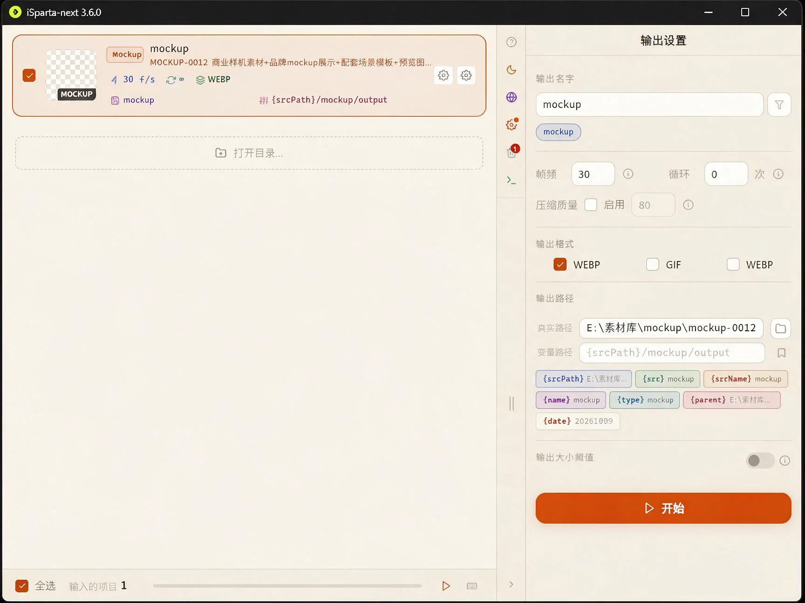
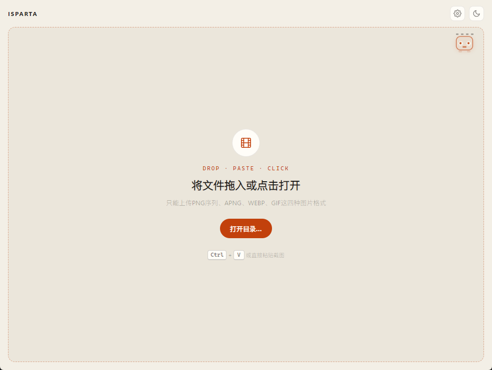
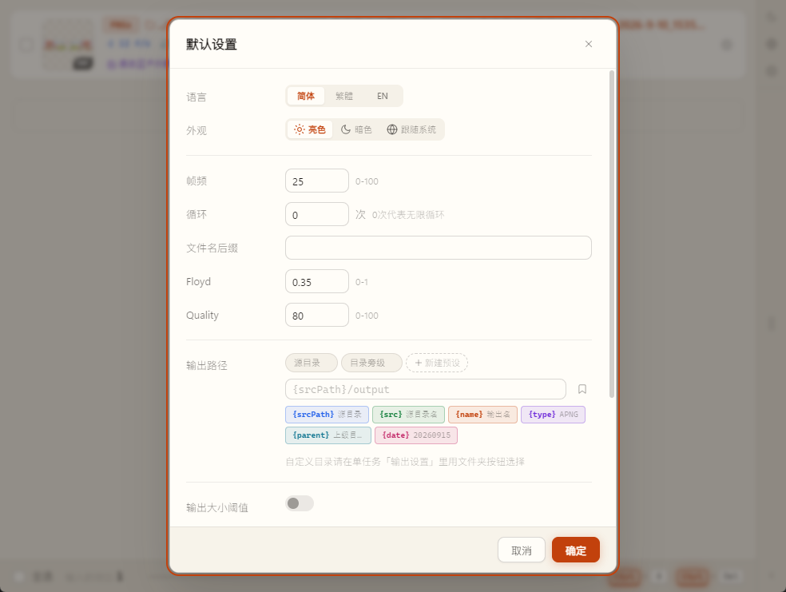

底层
Electron 28 · 关好门窗
contextIsolation、sandbox，该走 IPC 的都走 IPC，不再让渲染层裸碰 Node。
iSparta-next 是一款开源的动图转换工作台。PNG 序列、APNG、WebP、GIF 互转与压缩，桌面拖文件批量处理，AE 里直接导出合成。

00 · ABOUT
开源、跨平台的桌面动图转换工具，面向处理 PNG 序列、APNG、Animated WebP、GIF 的设计师与前端开发者。右边这一轨是可以横着看完的全部能力。
向下滚动 · 横向浏览
01 · WORKBENCH
选哪个文件夹、出什么格式、每秒几帧、循环几次、最大多大、文件叫什么、存到哪儿——全在一张卡片上配好，点开始就完事。
源格式
要输出成
当前路径：PNG 序列 → APNG
02 · SIZE GATE
导出 APNG / GIF / WebP 时先称一称：超过你设定的大小上限，就从更好的画质开始一档档降质量重压，直到达标。想自己定重试次数也可以。
03 · NAMING
长文件名自动拆成词，点一下留一个，漏掉的字只留文字也行；存放位置用 {工程名} 这类积木拼，实际路径马上预览给你看。
输出名字
输出路径
变量路径
真实路径
04 · AFTER EFFECTS
iSparta-next 深度嵌入 AE，基于 CEP 重新定制前后端，打开面板就自动识别全部合成，直接导出成动图，全程不用离开 AE。
面板开着就自动同步工程里的合成，嵌套的子合成也一并列出；勾选即可导出 APNG / WebP / GIF，不必回到桌面端。
任务列表与合成树视图一键切换，双击合成即可在 AE 里直接定位它，管理一整个工程也不费劲。
输出目录支持 {comp}、{fmt} 等变量模板，按合成名与格式自动分文件夹，批量导出后依然条理清晰。
不是把桌面界面硬塞进窄面板：控件、字号与间距都按 CEP 面板宽度重新适配，窄窗口一样完整可用。
面板与主程序都接上开发服务器：改代码自动热替换，CEP 面板不用重装、不用重启 AE，迭代调试快得多。
扩展面板不是附庸品：任务列表、设置、命名、日志一应俱全，桌面端有的能力这里都能用到。
从工程面板到导出都在 AE 里完成，省去在文件夹与软件之间来回切换，节奏不被打断。
与桌面端共用同一套压缩 / 合成 / 降质算法，输出的大小规则与命名习惯完全一致，跨端协作不返工。
选中合成 → 变量路径落盘 → APNG / WebP / GIF
05 · REAL UI
应用真实界面：空状态导入、任务卡片列表、参数设置、默认设置（命名 / 路径 / 大小上限）。
和仓库 docs/screenshots/ 同源 · Electron 实拍


06 · LINEAGE
谢谢原作者和每一位社区维护者。后面的故事，是接着他们的脚印往前走。
基建 fork · 本仓库直接上游
libwebp 1.5（CVE-2023-4863）、Electron 6→13、Vue CLI 4、execFile 防注入、存储/转换锁修复、迁到 GitHub Actions。
现在 · iSparta-next
从 bigixixi 原版再次 fork：Electron 28 + sandbox / IPC，重做 Element UI 外壳的工作台，新增大小上限自动重压、路径变量自定义、批量与前后对比，并有 CI 打包。
07 · 免费开始 · 开源可商用
所有链接永远指向最新版。macOS 未签名，第一次打开被拦请看 Release 说明。
桌面端
Windows 安装向导一次装全桌面与 AE 扩展；macOS 解压后启动一次桌面应用即完成扩展安装。
Windows / Linux 安装版支持应用内自动更新。AE 扩展始终与桌面应用同版本：Windows 由安装向导装完，macOS 在首次启动桌面应用时自动落盘；装完重启 After Effects 生效。